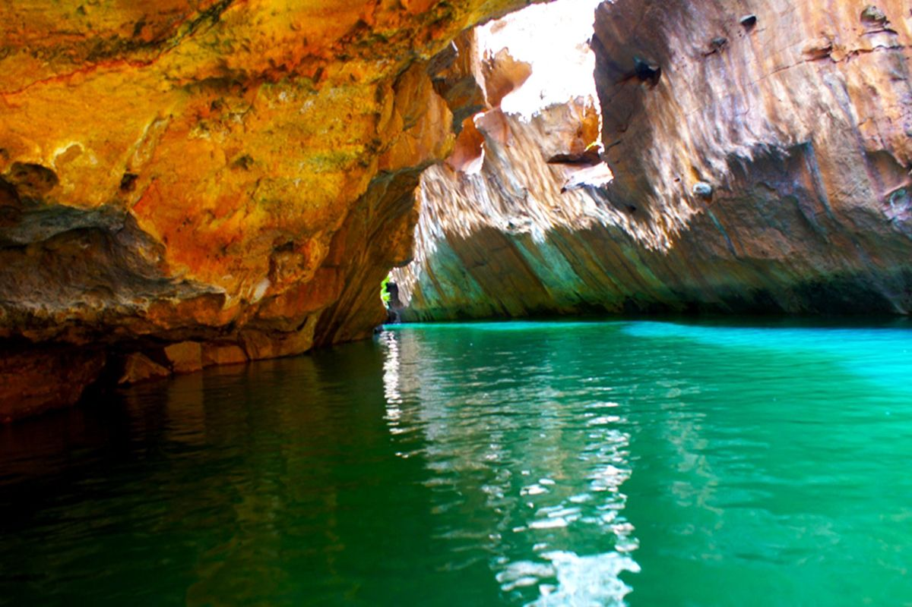

Curiosidades

Canions de São Francisco
O Cânion do Xingó é o local turístico mais procurado do estado de Sergipe. Uma bela atração que fica distante das praias, localizado em pleno sertão nordestino. O Cânion do Rio São Francisco é um conjunto de formações rochosas de cor avermelhada, com dezenas de quilômetros de extensão. Torna-se ainda mais belo por ser cortado pelo rio. O cânion está situado no município de Canindé do São Francisco, a 213 km de Aracaju, no Rio São Francisco.